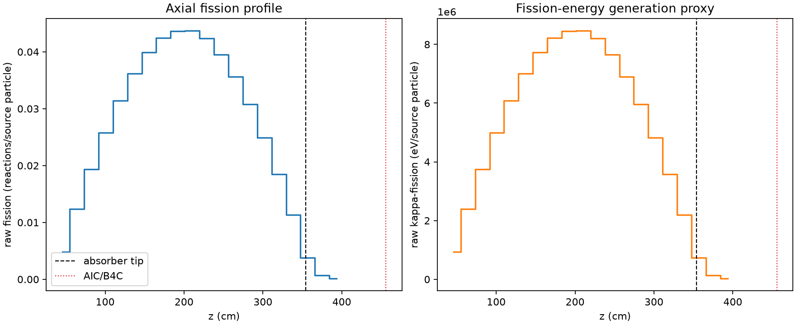
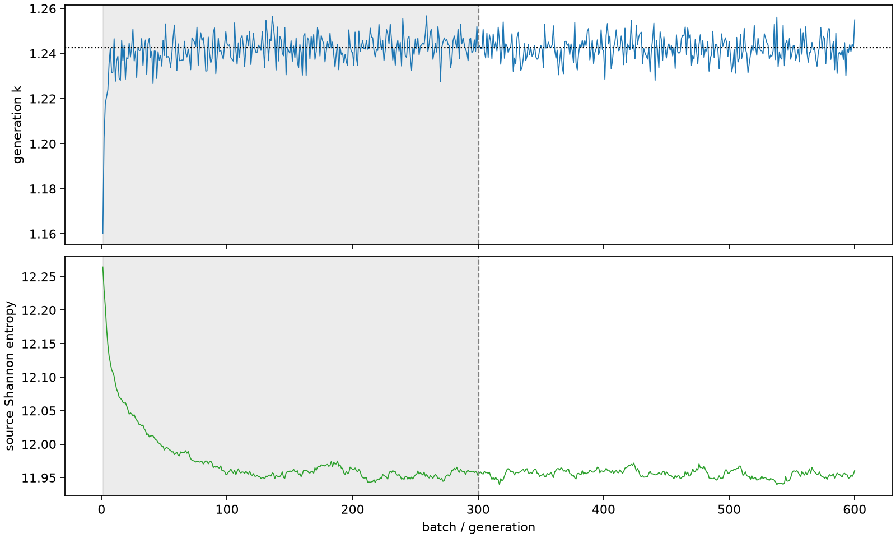

| field | value |
|---|---|
| experiment | V2-STAGE_256_OGRENCI_01-0027 |
| k | 1.242597976501269 |
| MC standard error | 0.00018503525962488437 |
| seconds | 992.5364537870046 |
| acceptance | not_assessed |
| convergence | review_required |
Completed is output integrity only; physical and statistical review required. Zero tallies do not prove zero production or zero uncertainty.
| diagnostic | value |
|---|---|
| geometric fuel voxels | 5280 |
| zero fission tally voxels | 0 |
| low signal fuel voxels | 2 |
| low signal fission share | 2.145259256548121e-06 |
| low signal kappa share | 2.1460971795078387e-06 |
| important fission share | 0.9500604619826518 |
| previous filter included | 5278 |
| duration estimate s | 1562.5173488400023 |
| actual minus estimate s | -569.9808950529978 |
| fission relative MC error | statistics |
|---|---|
| all_geometric_fuel | {"voxels": 5280, "positive_mean_voxels": 5280, "zero_mean_voxels": 0, "undefined_relative_error_voxels": 0, "median": 0.010408962204023375, "p95": 0.07455721089010302, "maximum": 0.23162129307490126} |
| low_signal | {"voxels": 2, "positive_mean_voxels": 2, "zero_mean_voxels": 0, "undefined_relative_error_voxels": 0, "median": 0.22339387685944942, "p95": 0.23079855145335607, "maximum": 0.23162129307490126} |
| important_95pct | {"voxels": 3861, "positive_mean_voxels": 3861, "zero_mean_voxels": 0, "undefined_relative_error_voxels": 0, "median": 0.009335178869489173, "p95": 0.014032783892659204, "maximum": 0.018392803759978534} |
| outside_previous_filter | {"voxels": 2, "positive_mean_voxels": 2, "zero_mean_voxels": 0, "undefined_relative_error_voxels": 0, "median": 0.22339387685944942, "p95": 0.23079855145335607, "maximum": 0.23162129307490126} |
| kappa_fission relative MC error | statistics |
|---|---|
| all_geometric_fuel | {"voxels": 5280, "positive_mean_voxels": 5280, "zero_mean_voxels": 0, "undefined_relative_error_voxels": 0, "median": 0.010398440002669207, "p95": 0.07443077626863841, "maximum": 0.2312446157985656} |
| low_signal | {"voxels": 2, "positive_mean_voxels": 2, "zero_mean_voxels": 0, "undefined_relative_error_voxels": 0, "median": 0.22305348398449934, "p95": 0.23042550261715897, "maximum": 0.2312446157985656} |
| important_95pct | {"voxels": 3861, "positive_mean_voxels": 3861, "zero_mean_voxels": 0, "undefined_relative_error_voxels": 0, "median": 0.009325180725062401, "p95": 0.014017024485804453, "maximum": 0.01837191307567666} |
| outside_previous_filter | {"voxels": 2, "positive_mean_voxels": 2, "zero_mean_voxels": 0, "undefined_relative_error_voxels": 0, "median": 0.22305348398449934, "p95": 0.23042550261715897, "maximum": 0.2312446157985656} |
| axial bin | fission share | kappa-fission share |
|---|---|---|
| 1 | 0.009585068238026514 | 0.009585374379655945 |
| 2 | 0.024429194558531646 | 0.02442917662381279 |
| 3 | 0.03819568573255162 | 0.03819570704614326 |
| 4 | 0.050846845360915924 | 0.050846679572394055 |
| 5 | 0.06185016197042095 | 0.0618497912609164 |
| 6 | 0.07133621071573674 | 0.0713359026219843 |
| 7 | 0.07861264937459009 | 0.0786126272187025 |
| 8 | 0.08360940052244778 | 0.08360936122729719 |
| 9 | 0.08608713204264824 | 0.0860871080515152 |
| 10 | 0.08610598877302619 | 0.08610584197173614 |
| 11 | 0.08343972871527666 | 0.08343957589343819 |
| 12 | 0.07795820748650871 | 0.07795810819501475 |
| 13 | 0.07020745281631036 | 0.07020727376753226 |
| 14 | 0.060666302011341516 | 0.060666051808092036 |
| 15 | 0.04914477482131361 | 0.049144715295558264 |
| 16 | 0.03638752594659092 | 0.036387372282446595 |
| 17 | 0.02237712701561885 | 0.02237712013901366 |
| 18 | 0.007424152243410774 | 0.007425201450333444 |
| 19 | 0.0014451093208376015 | 0.0014456078183853458 |
| 20 | 0.0002912823338954793 | 0.00029140337602756003 |
Histories include the inactive-to-active transition at batch 300. kappa-fission approximates fission energy production, not total heat deposition.

